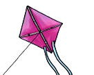

Lesson 8: Letter K
Lesson 8
Letter K

Trace, identify, or enter the letter K; explore a teacher-provided raised-line letter model before answering.
Copy the letter K using the writing lines, keyboard, or braille.
Copy Kk using the writing lines, keyboard, or braille.